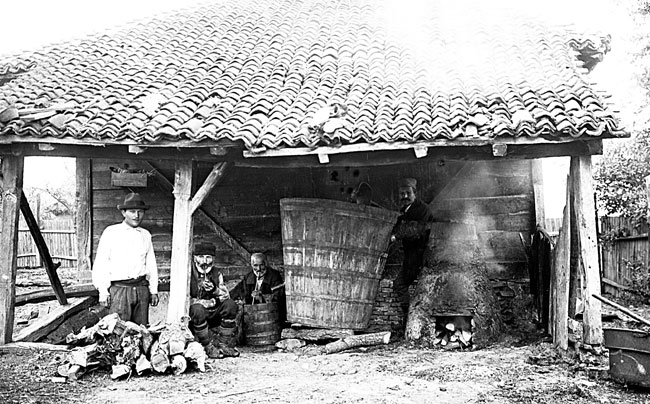

Šta je rakija?

Rakija je žestoko alkoholno piće. Dobija se jednostrukom ili dvostrukom destilacijom mase koja se dobija alkoholnim vrenjem voća, raži, krompira i sličnog. U slučaju kada se rakija proizvodi od voća koje ima nešto niži procenat šećera, kao što je jabuka, vrši se višestruka destilacija mase, da bi se dobila željena koncentracija alkohola i čistoća napitka. Jabukova masa se uglavnom destiliše tri puta i takvim postupkom se dobija rakija jačine 45° (procenata alkohola).Posle prve destilacije dobija se tzv. „meka“ rakija sa manjim procentom alkohola, a ponovnom destilacijom „meke“ rakije dobija se „prepečenica“. Radi ubrzanja procesa vrenja nekad se dodaje šećer što povećava količinu dobijenog destilata ali dovodi i do smanjenja njegovog kvaliteta.U Bugarskoj je otkriven deo kazana za pečenje rakije iz 11. veka
Kako se proizvodi rakija?

Rakija se može proizvoditi od svih voćnih vrsta koje sadrže šećer iz kojeg u toku alkoholne fermentacije nastaje alkohol. Najpogodnije voćne vreste za proizvodnju rakije su jabučaste (jabuke i kruške) i koštičave vrste (šljive, trešnje, višnje, kajsije i breskve). U nekim zemljama rakija se proizvodi i od bobičastog voća (maline, ribizle, kupine itd.). Lozovača i komovica se proizvode od prevrelog kljuka grožđa ili komine od grožđa koje zaostaju u proizvodnji vina.Voće za proizvodnju rakije se bere u punoj fiziološkoj zrelosti jer u tom stadijumu voće sadrži maksimalnu količinu šećera i najizraženiju sortnu aromu koja je veoma važna za svaku voćnu rakiju. Za proizvodnju voćnih rakija uglavnom se koristi voće koje nije prikladno za duže čuvanje i skladištenje, prezrelo, oštećeno i manje kvalitetno.
Kako su Srbi nekada pekli rakiju?
U Manakovoj kući otvorena je 6. septembra autorska izložba Josifa Vacića, kustosa u Etnografskom muzeju, „Praviti i piti rakiju”.Uz predmete i fotografije iz fonda Etnografskog muzeja dat je celovit prikaz prakse i običaja u vezi sa pečenjem i ispijanjem rakije u srpskom narodu.Za proizvodnju rakije koristi se specijalno konstruisani kazan. Kako nam je na ovoj izložbi prikazano, postoje dva različita tipa kazana koji su u upotrebi tokom 20. veka. Prvi je tzv. seljački kazan, koji su pravili sami domaćini ili vešti ljudi iz sela, dok je drugi tip kazana (lampek ili mašinski kazan) proizvod zanatlija. Ložište za „seljački kazan” se zidalo od blata i zemlje, a svi delovi (osim samog kazana u kome vri kljuk) često su pravljeni od drveta. Na jugu Srbije za izradu kapaka, lula, tabarki, pa čak i samog kazana, koristila se glina.